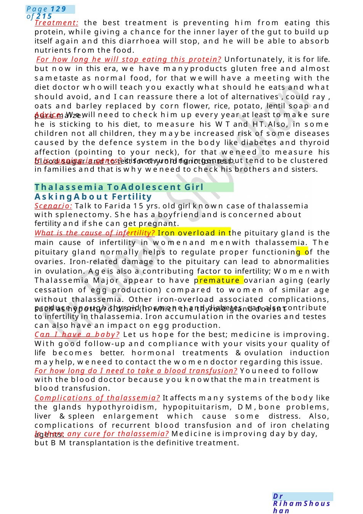

Thalassemia To Adolescent Girl Asking About Fertility
Treatment: the best treatment is preventing him from eating this protein, while giving a chance for the inner layer of the gut to build up itself again and this diarrhoea will stop, and he will be able to absorb nutrients from the food. For how long he will stop eating this protein? Unfortunately, it is for life. but now in this era, we have manyproducts gluten free and almost sametaste as normal food, for that wewill have a meeting with the diet doctor whowill teach you exactly what should he eats and what should avoid, and I can reassure there a lot of alternatives , could ray , oats and barley replaced by corn…
Scenario Summary
Treatment: the best treatment is preventing him from eating this protein, while giving a chance for the inner layer of the gut to build up itself again and this diarrhoea will stop, and he will be able to absorb nutrients from the food. For how long he will stop eating this protein? Unfortunately, it is for life. but now in this era, we have manyproducts gluten free and almost sametaste as normal food, for that wewill have a meeting with the diet doctor whowill teach you exactly what should he eats and what should avoid, and I can reassure there a lot of alternatives , could ray , oats and barley replaced by corn…
Full Original Scenario

Thalassemia To Adolescent Girl Asking About Fertility
Treatment: the best treatment is preventing him from eating this protein, while giving a chance for the inner layer of the gut to build up itself again and this diarrhoea will stop, and he will be able to absorb nutrients from the food.
For how long he will stop eating this protein? Unfortunately, it is for life. but now in this era, we have manyproducts gluten free and almost sametaste as normal food, for that wewill have a meeting with the diet doctor whowill teach you exactly what should he eats and what should avoid, and I can reassure there a lot of alternatives , could ray , oats and barley replaced by corn flower, rice, potato, lentil soap and pure maize.
Advice: Wewill need to check him up every year at least to make sure he is sticking to his diet, to measure his WTand HT.Also, in some children not all children, they maybe increased risk of some diseases caused by the defence system in the body like diabetes and thyroid affection (pointing to your neck), for that weneed to measure his blood sugar and to test for thyroid function test .
It is running in genes? it is not running in genes but tend to be clustered in families and that is why weneed to check his brothers and sisters.
Scenario: Talk to Farida 15 yrs. old girl known case of thalassemia with splenectomy. She has a boyfriend and is concerned about fertility and if she can get pregnant.
What is the cause of infertility? Iron overload in the pituitary gland is the main cause of infertility in womenand menwith thalassemia. The pituitary gland normally helps to regulate proper functioning of the ovaries. Iron-related damage to the pituitary can lead to abnormalities in ovulation. Ageis also a contributing factor to infertility; Womenwith Thalassemia Major appear to have premature ovarian aging (early cessation of egg production) compared to women of similar age without thalassemia. Other iron-overload associated complications, such as hypothyroidism (in which the thyroid gland doesn’t
produce enough thyroid hormone) and diabetes, can also contribute to infertility in thalassemia. Iron accumulation in the ovaries and testes can also have an impact on egg production.
Can I have a baby? Let us hope for the best; medicine is improving. With good follow-up and compliance with your visits your quality of life becomes better. hormonal treatments &ovulation induction mayhelp, weneed to contact the womendoctor regarding this issue.
For how long do I need to take a blood transfusion? Youneed to follow with the blood doctor because you knowthat the main treatment is blood transfusion.
Complications of thalassemia? It affects many systems of the body like the glands hypothyroidism, hypopituitarism, DM,bone problems, liver &spleen enlargement which cause some distress. Also, complications of recurrent blood transfusion and of iron chelating agents.
Is there any cure for thalassemia? Medicine is improving day by day, but BMtransplantation is the definitive treatment.

Constipation with Soiling
Shall I tell my partner? It better to tell himif you are planning to get pregnant because it runs in genes and if your partner has the gene, there's a chance 1 in each 4children to have the disease.so, premarital diagnosis is important.
Advice: advice for good follow up, regularity of blood transfusion and medications. Advice for splenectomy. Team of nematology, endocrine, gynaecology & obstetrics, genetics, orthopaedics.
Explanation : Normally, when we eat the food go through our gut by this movement ( flexion and extension of fingers , in some children these movements are a little bit slower than other children, as a result the stool will stay for a longer period in the back passages , being there for a long time it will lose its water and become really hard and difficult to go to outside leading to impaction at the back passage. Whena newfluid camefrom above, it will goaround this hard stool to outside andhe doesn’thave any control on it.
Treatment: he should take diet rich in fluids and fibres and avoid constipating foods like starchy one. Heshould have regular unhurried toilet time specially after meals with correct toilet positioning (lean forward while the feet on the floor). also, we should reward him for good behaviour and avoid negative reaction if he had a soiling.
Then wehave to remove this hard stool from the back passage, first wewill try by what wecall oral Dis impaction using a syrup lactulose or sachets called Movicol for one week.
If noresult or Movicol not tolerated, wegive something that stimulate the movementof the gut (senna or sodium pyrosulfate ).
If oral route failed, wewill give him medicine by his bottom called enema (sodium citrate) if enema failed, wewill do manual evacuation after involving the consultant, gut doctor and surgeon.
Is it surgery ? No, but wejust give him sleeping medicine to avoid any discomfort.
What after removing the impacted stool? Weuse Movicol sachets for 3 to 6 months till he has daily soft poo and had good sensation to open his bowel .then gradually decreasing the dose of Movicol sachets.
What happen if this constipation not treated? it causes tummy pain, blood passing and pain during poo, infection in pee and headache
How did you know it is functional and not serious matter in him: there are no warning symptoms like not growing well, passage of blood, severe tummypain, throwing up, soreness in the back passages or history of any abuse. and if any of these noted you should seek medadvice.